|
|
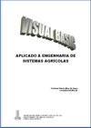 Visual Basic Aplicado à Engenharia de Sistemas Agrícolas
Objetivo: Ensinar o uso de uma linguagem de computador para desenvolvimento de programas computacionais, utilizando exemplos de aplicações em sistemas agrícolas.
Carga-horária: 30 horas-aulas |
Capacitação e introdução tecnológica na cadeia da produção de
mandioca, farinha e organização social de produtores assentados de
Itaquiraí - MS
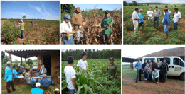 |
|
|
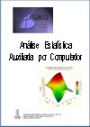 Análise Estatística Auxiliada por Computador
Objetivo: Propiciar a compreensão e a aplicação dos conceitos estatísticos, utilizando recursos de programas de computador.
Carga-horária: 30 horas-aulas |
Representação gráfica e modelagem de elementos sólidos de
equipamentos e máquinas agrícolas usando técnicas CAD
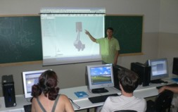 |
|
|
II
Congresso Brasileiro de Pesquisa em Pinhão-Manso
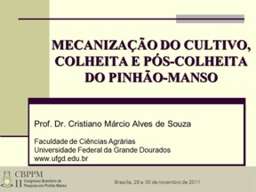 |
IX
Seminário Nacional de Milho Safrinha
|
|
|
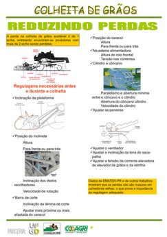
SHOWTEC 2007
Maracaju-MS |
Workshop Programa de C,T&I em Bioenergia do MS
Dourados-MS
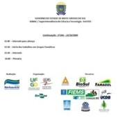
|
|
|
II Circuito
Nacional do Pinhão-manso
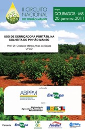 |
SHOWTEC 2010
Maracaju-MS
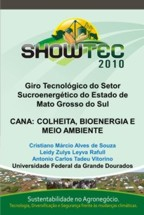 |
|
|
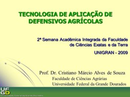 |
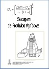
Secagem
e Aeração de Grãos
Objetivo: Treinar em armazenamento de produtos agrícolas nas
técnicas de secagem, visando diminuir a possibilidade de
perdas quantitativas e manter a qualidade do produto final.
Carga-horária: 40 horas-aulas |
|
|
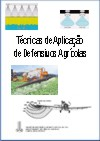 Tecnologia
de Aplicação de Defensivos Agrícolas
Objetivo: Treinar os profissionais que atuam na área
de aplicação de defensivos agrícolas, visando uma operação
eficiente e segura.
Carga-horária: 40 horas-aulas |
|